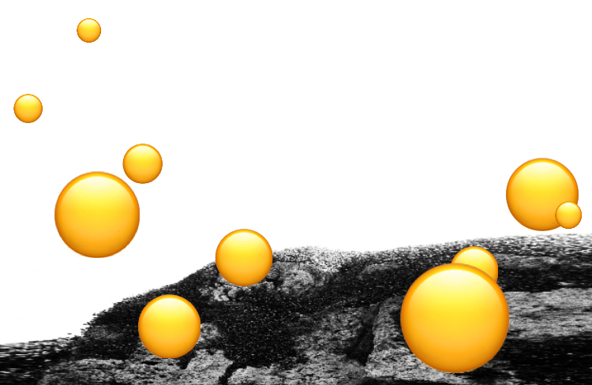

When I clicked into the website, the first thing I paid attention to was the moving yellow circles. My first reaction was to left click all of them. Once I realised that every left click of the circles, a sentence, an image or a paragraph would appear, I started left clicking the circles constantly to clear the entire screen. My attention went to the yellow circles very quickly due to its flowing movement around the whole screen as well as its bright yellow colour in comparison to the black and white simple background. Furthermore, there are no other images or words beside the yellow circles and so they are the most noticeable feature on the website.
I spent most of my time left clicking the yellow circle emojis that were flowing around the website screen. I was motivated to clear all of the circles and I felt satisfied after clearing them. The images and words would also have been blocked by the circles if I don't clear them, which could be purposely planned by the creator as it would encourage the users of the website to remove the circles by left clicking.
I clicked my mouse a lot during my two minute interaction due to the moving yellow circles around the screen. After clearing the yellow circles, I began scrolling up and down a lot, looking and reading the images and words that appeared one by one when I clicked the circle emojis previously.
My first impression of the interactive experience was simply just clicking yellow circles. It was a very simple but addictive interactive experience. The images and sentences that appear as I click the circles were somewhat attractive. However, I didn't quite understand the meaning behind the narratives and images and was confused by the message and ideas the creator wants to convey.
The creator of the website intends to share narratives of the Kulin Nation. Nikki Lam shows the acknowledgement of the survival of First Nation people, those who have lost their homeland across the oceans as well as the notion that the impact of colonisation is ongoing and interconnected. The moment I entered the website, the colour of the circles as well as its size and movement grabbed my attention very quickly. Although it was intended by the creator as they organised their images and information as a response of clicking circles. My personal experience was that the information the creator wanted to share was not very clear or as attractive compared to the moving emojis. The "/info" heart was not very obvious as I only noticed it after all the images and narratives had been loaded. After reading the “/info” section on the website, I was able to understand that this website relates to the Kulin Nations and the painful memories they had in history and so I went back to reading the paragraphs and found it easier to understand.
The overall interaction with this website was not very long. Approximately 2-5 minutes should be enough to experience all the interaction parts of the website. There is essentially only clicking circles and reading information on the website. I don’t see myself coming back to this website just for the same experience as I do find it short and simple. However, I would be curious as to what the creators would do if they decide to update or include more and new interaction parts. I think audio could be an interesting choice.
The way the creator designed this website demonstrates their metaphor, “time absorbs feelings”. The circles that float around slowly fade away when the mouse clicks on it which can be seen as being absorbed. Furthermore, when the yellow circles disappear, narratives and images appear which can be seen as an individual's memories and feelings. Therefore, the notion that these yellow emojis store individuals’ memories could be applied as the intention behind this design.
As the website information relates to the First Nations people and the loss of memory, Nikki Lam designed the web page and the information to look like fragmented or scattered memories. The design of randomising the narratives and images every time you refresh the website can be referred to as a “perpetual loop”. There are also images that look like prisons. These could be compared with the floating circles which represent the desire of freedom. In addition, the narratives of the website are mainly negative and painful, as the memories are jumbled and broken into pieces, it makes it confusing to read and often don’t make sense to each other which can be seen as a reflection of “turn your pain into content.”
These references and design allows me to feel the individual’s internal conflicts and the painful memories they went through. Therefore, when I was exploring the website, I did not sense any positive feelings such as happiness or relaxation. Although the bright yellow floating circles represent freedom and hope, the disappearance of these circles and the appearance of painful images and writings makes me feel miserable and downhearted.
The most frustrating element during my interaction with the website was removing the floating yellow circle emojis. This made me frustrated because the circles are all in different sizes and have different flowing speed, therefore I often misclick on the circles that move fast and are small in size.
Although the most frustrating element of the interaction was clearing the circles, it was also the most satisfying element of the interactive website. The moment my laptop screen loaded the website, my attention went to the moving circles. Once I realised that pressing the circles will allow words and images to appear, I was motivated to clear all of the emojis. It was very satisfying for me to remove these circles and watch them fade away as it clears the entire screen, allowing me to read the sentences without anything in the way. However, most importantly the frustration that arises as I misclick some of the circles turns into a satisfaction at the end as I see no more yellow circles flowing around.